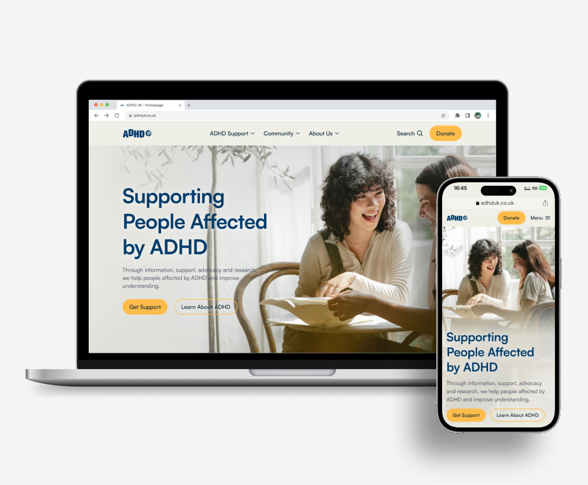
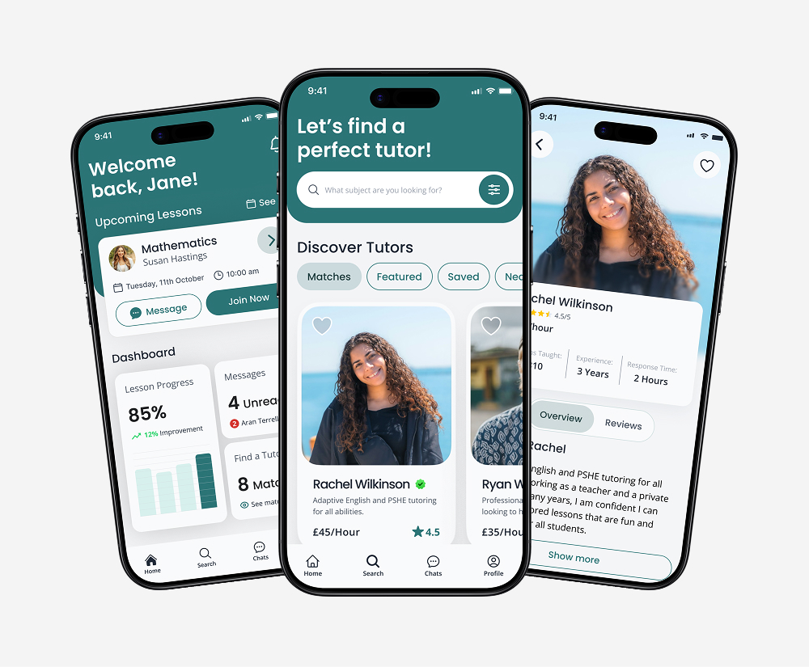

Add
adhd-uk.jpg to assets/projects/
ADHD UK
A responsive website redesign that made support clearer, more accessible, and easier to navigate for people affected by ADHD.
View case studyHello, I'm Mae Goulden!
adhd-uk.jpg to assets/projects/
A responsive website redesign that made support clearer, more accessible, and easier to navigate for people affected by ADHD.
View case studyA mobile app design giving parents confidence through smarter, personalised tutor matching, with safeguarding-first flows that feel simple, not bureaucratic.
View case studytutortrust.jpg to assets/projects/
“Mae is a pleasure to work with. Her collaborative approach and attention to detail made a real difference to the project.”
Amelia Axelsen
City of London Corporation
assets/mae-photo.pngHi, I'm Mae! I'm a designer who loves all things creative and all things sport! Born in Woking, I spent a lot of my youth travelling the country playing academy football. Football led me to some amazing opportunities, such as representing both England at U15s and Greece in the U19s Euros!
Art came along for the ride. There was usually an iPad in my kit bag or a sketchbook on the plane. Football also taught me how to take feedback without taking it personally, which turns out to be most of design. Now I solve complex problems with accessible digital experiences, built around clarity, empathy, and inclusive design.
Whilst playing semi-professional football, I started my career in inclusion within education. I saw first hand how systems can either include people or leave them behind. Every day was about understanding different needs, removing barriers and adapting my approach when the first one didn't work. Most products don't fail because they look wrong; they fail because they assume everyone arrives with the same confidence, context, and capability. That's the assumption I design against. Combined with my background in graphic design, it's what led me to UX.